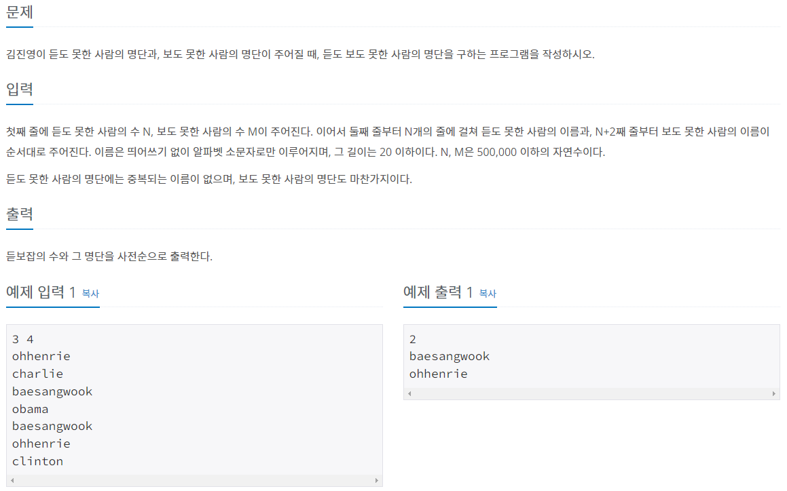

#INFO
난이도 : SILVER4
문제유형 : 탐색 알고리즘

#SOLVE
처음에는 시간제한(2s)를 고려하지 않고 단순히 이중 for문을 돌려 두 배열(듣도 못한 사람의 이름, 보도 못한 사람의 이름)을 비교하여 탐색하였더니 시간 초과가 발생하였다.
int cnt = 0;
for(int i = 0; i < n; i++){
for(int j = 0; j < m; j++){
if(str1[i] == str2[j]) {
ans.push_back(str1[i]);
cnt++;
}
}
}
따라서 이진탐색 알고리즘(binary_search)을 이용해 문제를 풀이하였다. 단 조심해야 할 부분은 이진 탐색 알고리즘은 배열의 원소가 정렬 되어 있어야 탐색이 가능하기에 입력받은 문자열 배열을 미리 오름차 정렬 해 주어야 한다.
// binary search 알고리즘은 미리 정렬이 되어 있어야 한다.
sort(v.begin(), v.end());
int cnt = 0;
string str;
for(int i = 0; i < m; i++){
cin >> str;
if(binary_search(v.begin(), v.end(), str)){
ans.push_back(str);
cnt++;
}
}#CODE
#include <bits/stdc++.h>
using namespace std;
int main(void) {
ios::sync_with_stdio(0);
cin.tie(0); cout.tie(0);
int n, m;
cin >> n >> m;
vector<string> v;
vector<string> ans;
v.resize(n);
for(int i = 0; i < n; i++){
cin >> v[i];
}
sort(v.begin(), v.end());
int cnt = 0;
string str;
for(int i = 0; i < m; i++){
cin >> str;
if(binary_search(v.begin(), v.end(), str)){
ans.push_back(str);
cnt++;
}
}
sort(ans.begin(), ans.end());
cout << cnt << '\n';
for(int i = 0; i < cnt; i++){
cout << ans[i] << '\n';
}
return 0;
}